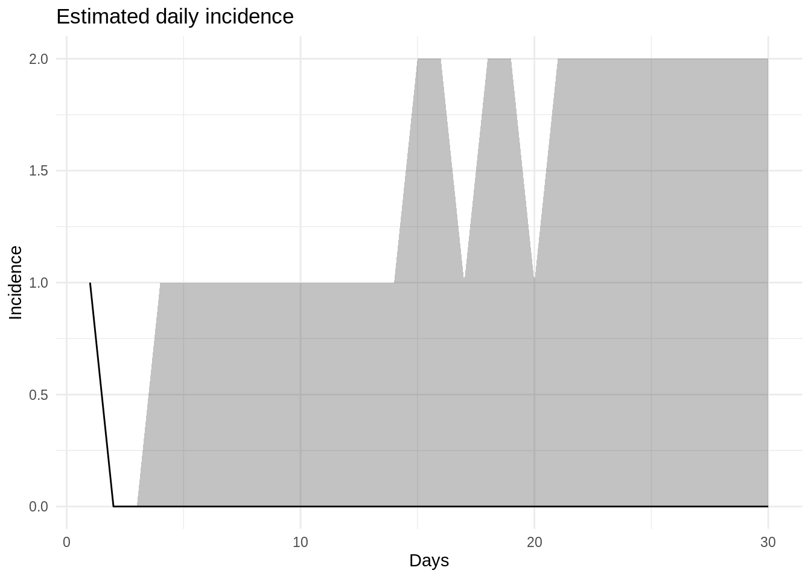
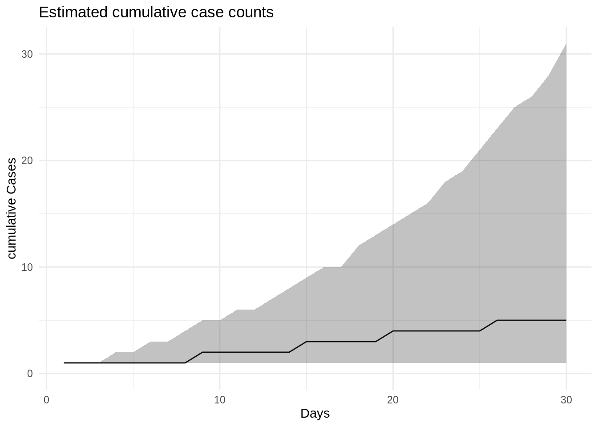
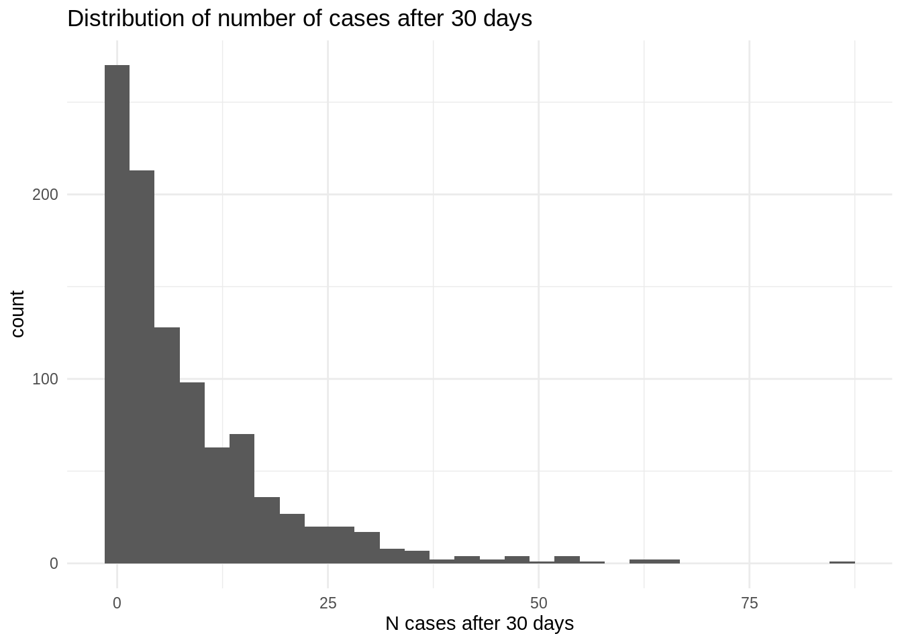

branching_process.RmdWe show how to use the branching process model by modelling the potential spread of SARS-like corona virus. The branching process model takes information about the basic reproduction number, the serial interval and a dispersion parameter and can make short term forecasts of the number of new cases. The current model does not take into account depletion of suceptibles or the introduction of any control measures.
Following Lipsitch et Al 2003 we use a value for R0 of 3 and a serial interval with mean 8.4 days and SD 3.4 days. We also set the dispersion parameter to 0.16 following Lloyd-Smith et Al 2005.
library(ggplot2)
library(epitrix)
#Defining the serial interval
mu <- 8.4
sd <- 3.4
param <- epitrix::gamma_mucv2shapescale(mu, sd/mu)
si <- distcrete::distcrete("gamma", interval = 1,
shape = param$shape,
scale = param$scale, w = 0)
incidences <- spread::branching_process(initial_cases=1,
R0=1.4,
dispersion=1,
serial_interval=si,
days_simulation=30,
simulations=1000)
summary <- spread::summarize_bp(incidences)
spread::plot_quantiles_bp(incidences) + ggtitle("Estimated daily incidence") + xlab("Days") + ylab("Incidence")
spread::plot_quantiles_bp(summary$cumulative) + ggtitle("Estimated cumulative case counts") + xlab("Days") + ylab("cumulative Cases")
ggplot() + geom_histogram(aes(x=colSums(incidences))) +theme_minimal() +ggtitle("Distribution of number of cases after 30 days") + xlab("N cases after 30 days") 
The median number of cases is around 50, with a probability of no spread is around 6%.
We can also estimate the R0 if we know the number of cases after a time t. Here we will assume that there are between 2000 and 4000 cases after 56 days. One can also here vary the other parameters to include uncertainty in them
mu <- 8.4
sd <- 3.4
param <- epitrix::gamma_mucv2shapescale(mu, sd/mu)
si <- distcrete::distcrete("gamma", interval = 1,
shape = param$shape,
scale = param$scale, w = 0)
params <- list()
for(R0 in seq(from=1, to=10, by=0.05)){
params[[length(params)+1]] <- list(
initial_cases=1,
R0=R0,
dispersion=1,
serial_interval=si,
days_simulation=56
)
}
r <- spread::fit_params_bp(
cases_min = 2000,
cases_max = 3000,
param_list = params,
simulations=1000
)
print(HDInterval::hdi(r$R0))
#> lower upper
#> 2.05 4.35
#> attr(,"credMass")
#> [1] 0.95